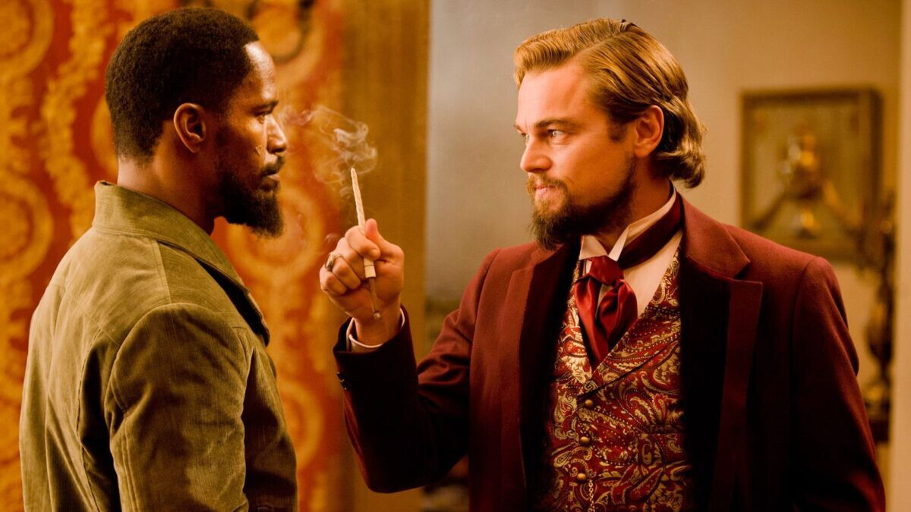

Una de las escenas más impactantes de 'Django Desencadenado' se decidió a última hora y tardó dos semanas en fraguarse. "Necesitamos otro tiroteo"
Parece impensable que no estuviese en el guion
20 de noviembre
Si pensamos en directores meticulosos, Quentin Tarantino no parece desde luego un cineasta que deje cosas al azar. Pero con casi tres horas de duración, mucho diálogo y mucha casquería, en 'Django Desencadenado' hubo también espacio para la experimentación de última hora.
Según contaba Samuel L. Jackson en una entrevista para GQ en la que repasaba sus papeles más memorables, el western de Tarantino incluyó un tiroteo que inicialmente no estaba en el guion. Es una escena además que probablemente no sabrías adivinar, porque dentro de la película se siente, además de bastante orgánica, un clímax necesario para una secuencia mítica.
ntro del conjunto de la película, es una forma efectiva de romper la tensión y desatar el caos al más puro estilo Tarantino. Es además una buena forma de jugar con las expectativas del espectador, ya que es una secuencia de acción que les deja muy cerca de conseguir escapar con Broomhilda, pero fracasan en el último instante.
Es curioso además que la secuencia venga poco después del momento improvisado más conocido de la película: la escena en la que Leonardo DiCaprio se corta la mano al golpearla contra un vaso y en vez de pedir que corten la escena, continúa haciendo su monólogo hasta el final mientras sangra.